Welcome to our crowdsourcing platform for environmental data collection!
Our planet is facing numerous environmental challenges, from climate change to
pollution to habitat loss. To address these challenges, we need data -
and lots of it.
That's where you come in!!
Join us in collecting vital
environmental data to drive positive change.
By contributing your environmental observations and measurements
to our platform, you can help us build a more comprehensive picture of
the environment and inform policy and action. Whether you're an amateur
naturalist, a professional scientist, or just someone who cares about the
planet, your data can make a difference.From air quality to wildlife habitats, your
observations are the building blocks of
actionable solutions. Start your journey towards a cleaner, healthier environment with us.
Here's how it works:
- Sign up for a free account.
- Use our easy-to-use tools to submit your environmental data, including photos, videos, and descriptions.
and analyze data submitted by other users.
- Connect with other users and collaborate on environmental projects.
Here's what we have got from our users:
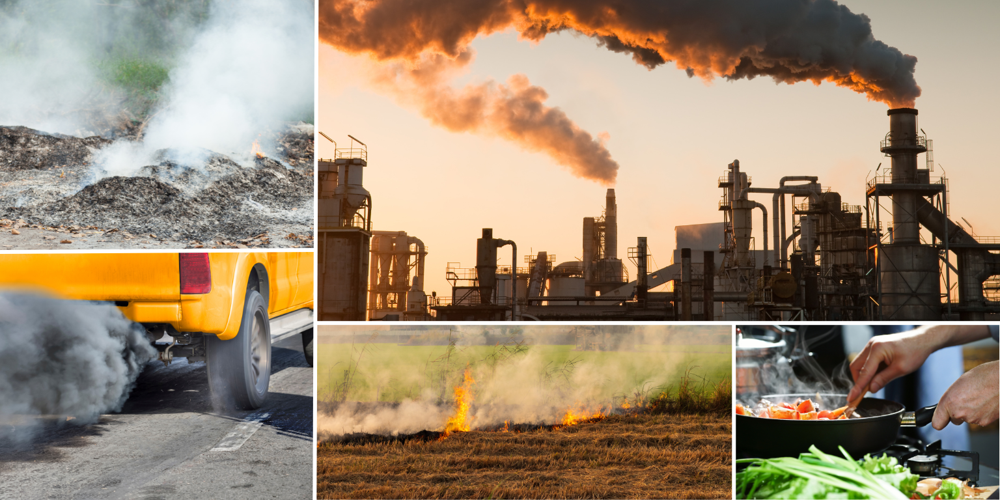
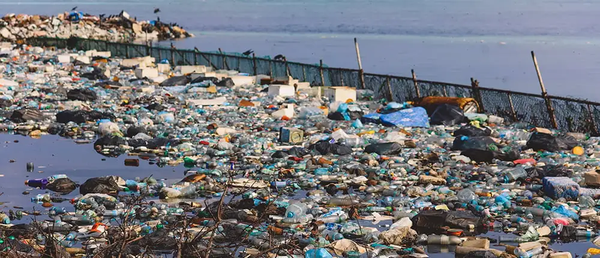
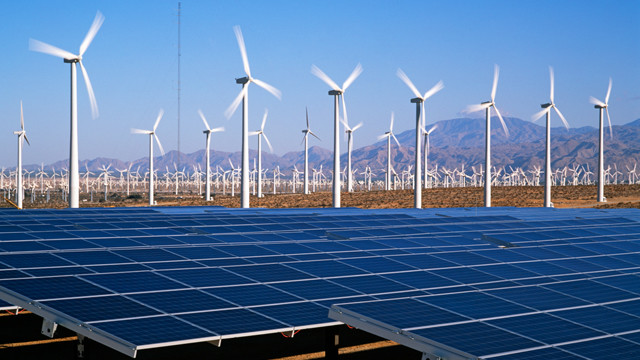
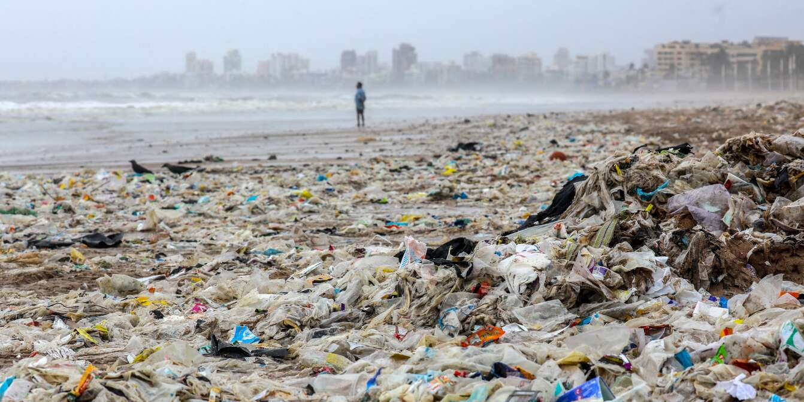
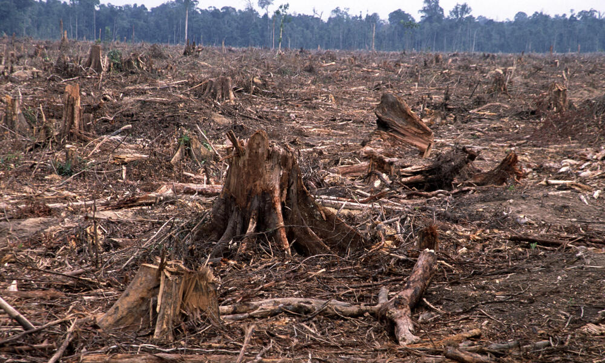
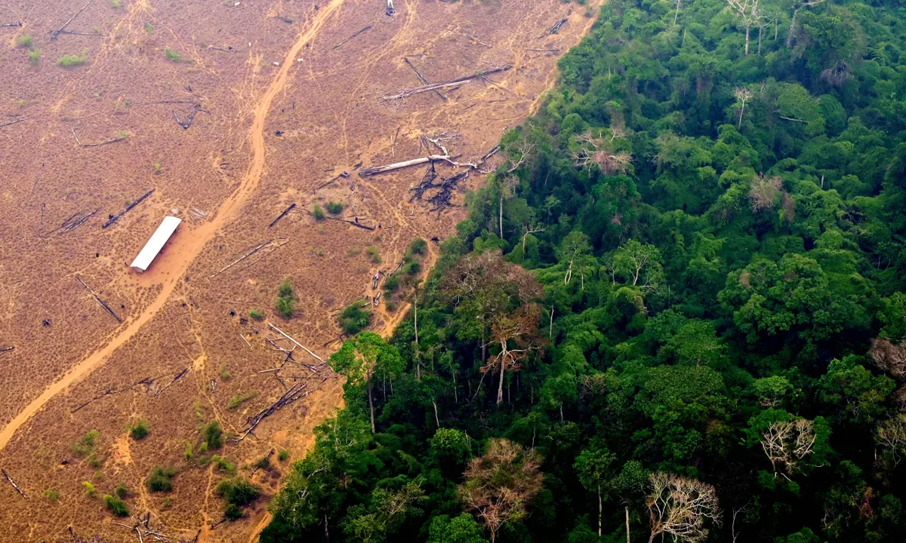
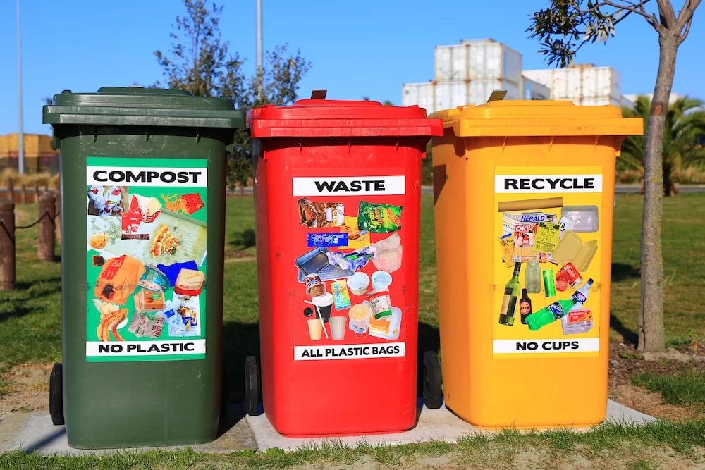
 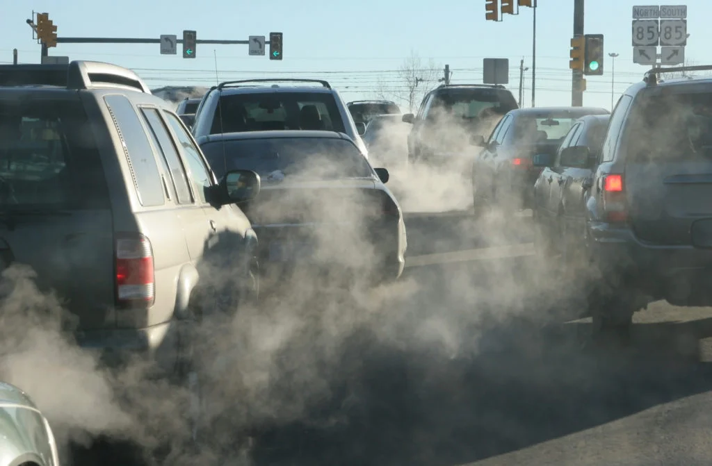
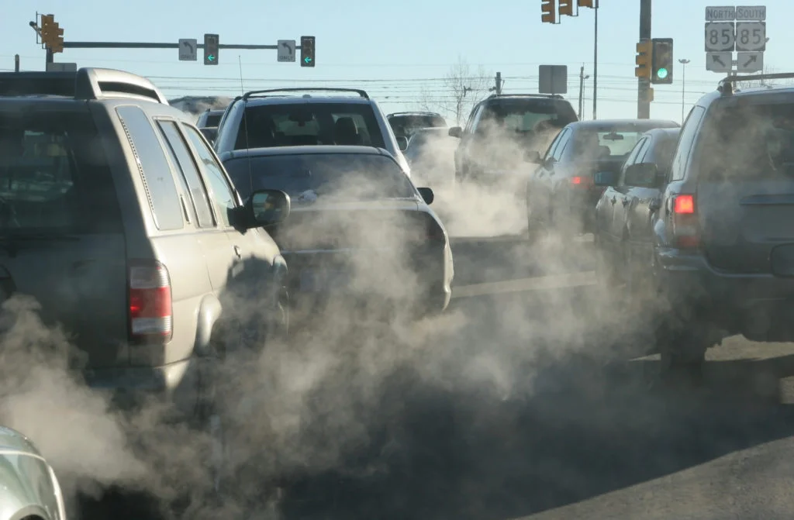
About Us:
Our website is employed with the task of harnessing
the power of collective action for environmental data collection
and conservation projects. Our platform is dedicated to tackling
pressing environmental challenges by mobilizing individuals like you
to contribute valuable data and insights.
At our website , we focus on projects spanning air quality
monitoring, water assessment, energy resource mapping, waste
management analysis, and tracking deforestation rates. By engaging with
these critical areas, we aim to empower communities worldwide to understand,
address, and mitigate environmental issues effectively.
Our mission is to democratize environmental data collection.
We believe that everyone can play a role in safeguarding our planet's health. Whether you're a concerned citizen, a researcher, an activist, or a policymaker, your participation on our platform drives real impact.
Join us in our collective effort to create a healthier and more
sustainable world. Together, we can make a difference—one data point at a time.
Explore our ongoing projects, contribute your observations, and be
part of the solution. Let's build a greener future together.
Our platform is designed to be accessible and user-friendly, with
features like automatic data validation, real-time mapping, and social
networking. We take data privacy and security seriously, and we're committed
to building a community that is inclusive, respectful, and supportive. It also offers a range of
features designed to engage
and empower users in contributing to environmental monitoring and
conservation efforts.These features typically include user-friendly interfaces
for data submission and exploration, allowing individuals to upload observations
, photos, and other relevant data
related to air quality, water quality, waste management, biodiversity, and deforestation.
So what are you waiting for?
Join us today and help make a difference
for the environment!
"We
believe in the power of collective data to drive
positive change. Together, we can better understand, protect,
and sustain our natural world."."
Here's what we have got from our users:
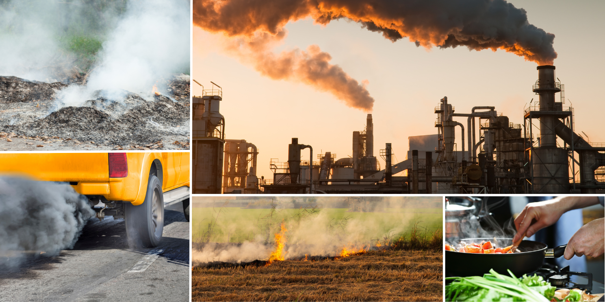
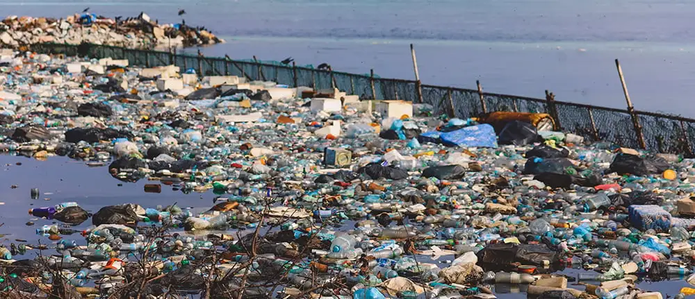
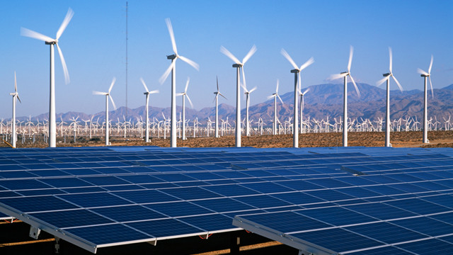
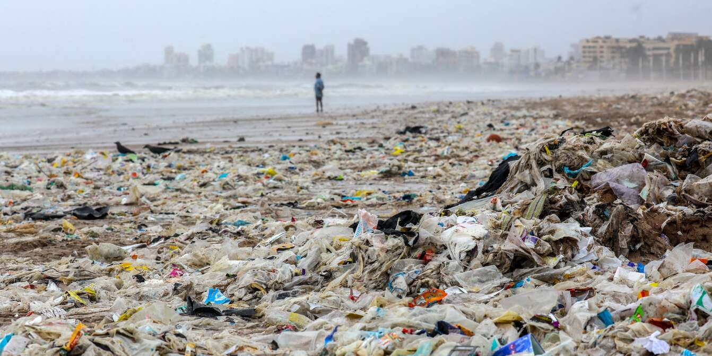
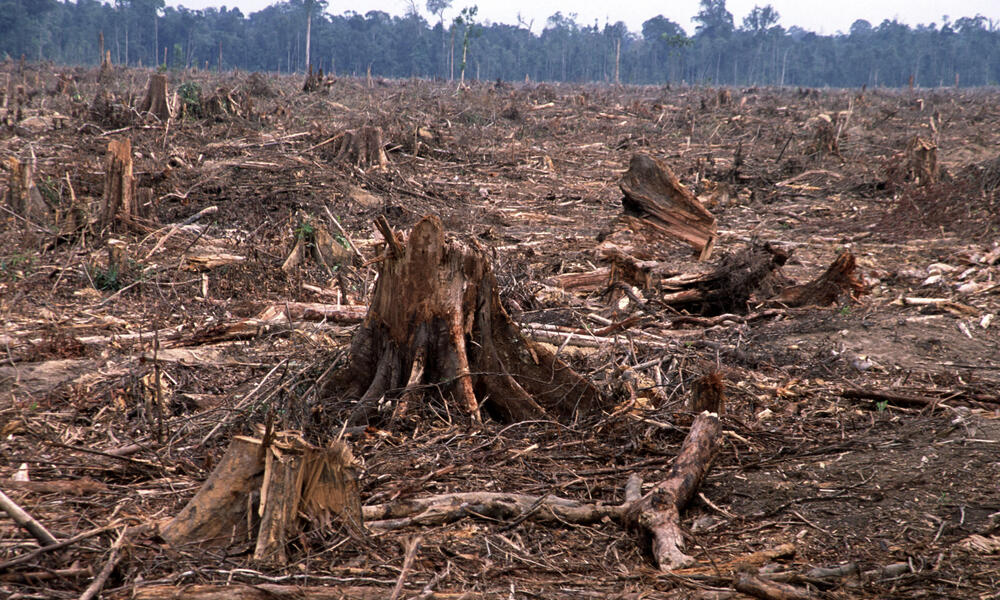
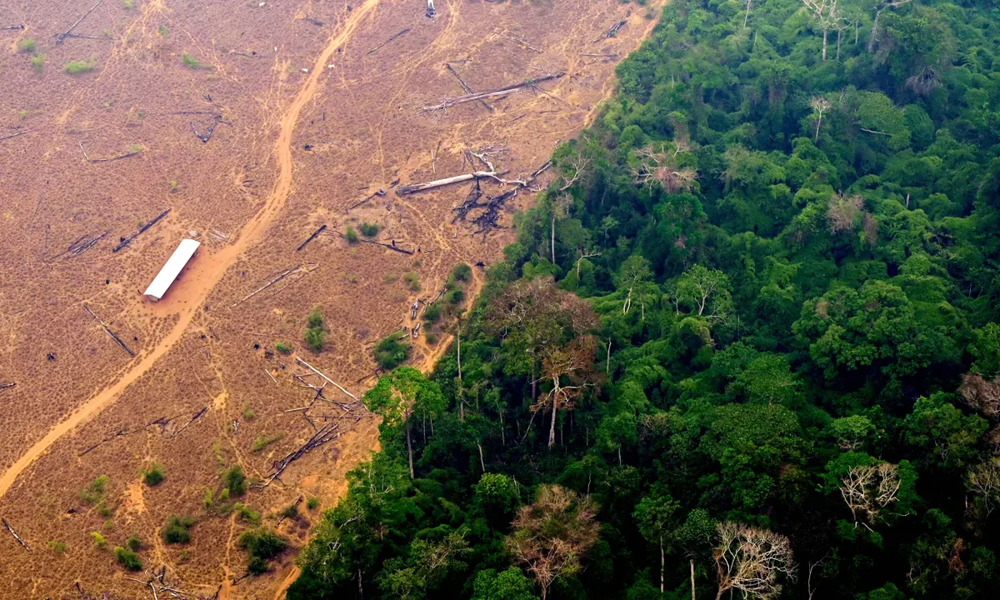
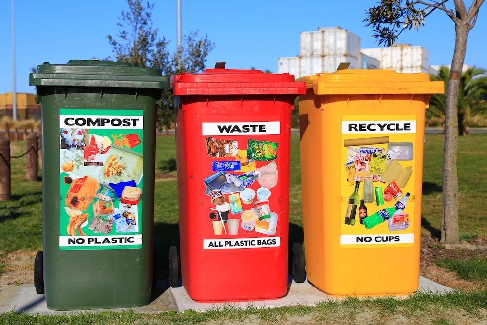
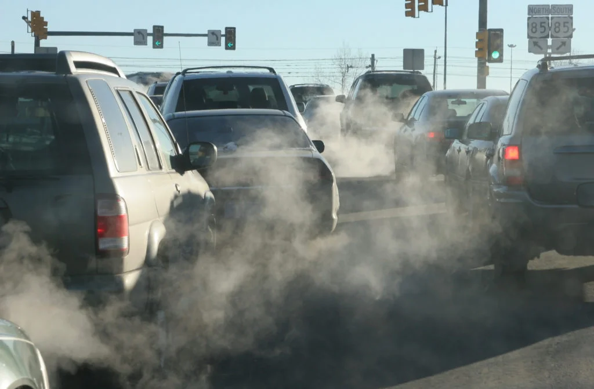
About Us:
Our website is employed with the task of harnessing
the power of collective action for environmental data collection
and conservation projects. Our platform is dedicated to tackling
pressing environmental challenges by mobilizing individuals like you
to contribute valuable data and insights.
At our website , we focus on projects spanning air quality
monitoring, water assessment, energy resource mapping, waste
management analysis, and tracking deforestation rates. By engaging with
these critical areas, we aim to empower communities worldwide to understand,
address, and mitigate environmental issues effectively.
Our mission is to democratize environmental data collection.
We believe that everyone can play a role in safeguarding our planet's health. Whether you're a concerned citizen, a researcher, an activist, or a policymaker, your participation on our platform drives real impact.
Join us in our collective effort to create a healthier and more
sustainable world. Together, we can make a difference—one data point at a time.
Explore our ongoing projects, contribute your observations, and be
part of the solution. Let's build a greener future together.
Our platform is designed to be accessible and user-friendly, with
features like automatic data validation, real-time mapping, and social
networking. We take data privacy and security seriously, and we're committed
to building a community that is inclusive, respectful, and supportive. It also offers a range of
features designed to engage
and empower users in contributing to environmental monitoring and
conservation efforts.These features typically include user-friendly interfaces
for data submission and exploration, allowing individuals to upload observations
, photos, and other relevant data
related to air quality, water quality, waste management, biodiversity, and deforestation.
So what are you waiting for?
Join us today and help make a difference
for the environment!
Join us today and help make a difference for the environment!